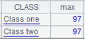
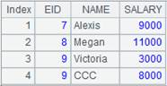
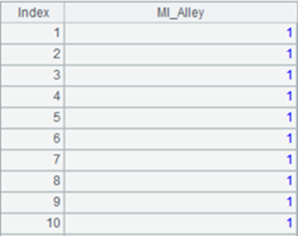
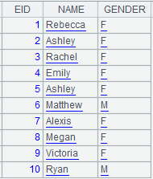

Description:
A foreign-key-style join between a pseudo table and a table sequence/record sequence.
Syntax:
T.join(C:.,A:K,x:F,¡; ¡;¡)
Note:
The function matches C field of pseudo table T with the key of table sequence/record sequence A to find the desired records. Add an F field represented by x, which is A¡¯s field expression, to T to generate a new pseudo table.
K can be omitted or represented by #. When omitted, K is A¡¯s key by default; when written as #, K is the ordinal number of a record of table A, which means foreign key numberization. Simply put, primary key values of the dimension table are natural numbers starting from 1, which are row numbers corresponding to table records. In this case, we can directly locate dimension table records according to key values by row numbers. This helps speed up association with the dimension table and further increase performance.
If there is an F field in T, just modify the existing field of A. Use the latest time calculated through now() when time key value is not specified.
Option:
|
@i |
Delete a record with a non-matching foreign key value; by default, a non-matching record will be represented by null. |
|
@o(F;¡) |
Use the record as the value of F field to generate a new record; here expression x is equivalent to ~, which is a whole record of T |
|
@d |
When parameters x:F are absent, delete whole records matching the foreign key and perform the filtering operation only over pseudo table T |
|
@m |
Enable a merge join when T is ordered by C and A is ordered by K |
Parameter:
|
T |
A pseudo table |
|
C |
T¡¯s foreign key; separate multiple fields in a composite key with the colon |
|
A |
Table sequence/record sequence |
|
K |
A¡¯s key |
|
x |
A¡¯s field expression |
|
F |
Field name in expression x |
Return value:
Pseudo table
Example:
|
|
A |
|
|
1 |
=create(file).record(["cities.ctx"]) |
Below is content of composite table cities.ctx:  |
|
2 |
=pseudo(A1) |
Generate a pseudo table from the composite table |
|
3 |
=connect("demo").query("SELECT * FROM STATECAPITAL where STATEID<30").keys(STATEID) |
Below is content of STATECAPITAL:  |
|
4 |
=A2.join(STATEID,A3,CAPITAL) |
Associate A2¡¯s pseudo table CITIES and A3¡¯s STATECAPITAL table through the foreign key, during which default parameter K is STATEID, the key of STATECAPTITAL, and add STATECAPITAL¡¯s CAPITAL field to CITIES to generate a new pseudo table, whose content is as follows:
|
|
5 |
=A2.join(STATEID,A3:#,CAPITAL) |
As STATEID field values are natural numbers starting from 1, which correspond to ordinarl numbers of records in STATECPATITAL table, parameter K is written as # to use those ordinal numbers in order to increae efficiency; return same result as A4 |
|
6 |
=A2.join@i(STATEID,A3,CAPITAL) |
@i option enables deleting records with non-matching foreign key values; write them as nulls if there isn¡¯t the option  |
|
7 |
=A2.join@i(STATEID,A3) |
@i option enables filtering CITIES table only when parameters x:F are absent
|
|
8 |
=A2.join@d(STATEID,A3) |
With @d option and when parameters x:F are absent, delete records where foreign key values are matching and perform filtering only on pseduo table CITIES
|
|
9 |
=A2.join(STATEID,A3,abc) |
Write records where values of parameter x cannot be found in A2 as nulls
|
|
10 |
=A2.join@o(cities;STATEID,A3,CAPITAL) |
@o option enables to take the whole orignal record as a cities value to generate a new record; this is equivalent to an expression where parameter x is ~
|
|
11 |
=A2.join(STATEID,A3,CAPITAL:NAME) |
Modify the existing fields when NAME field already exists in CITIES table  |